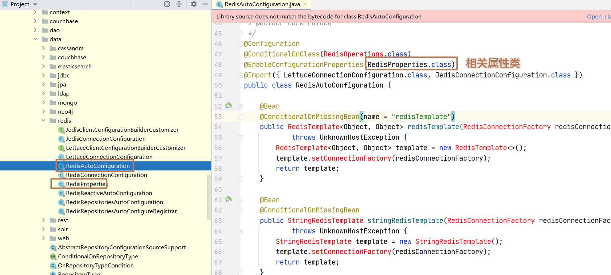
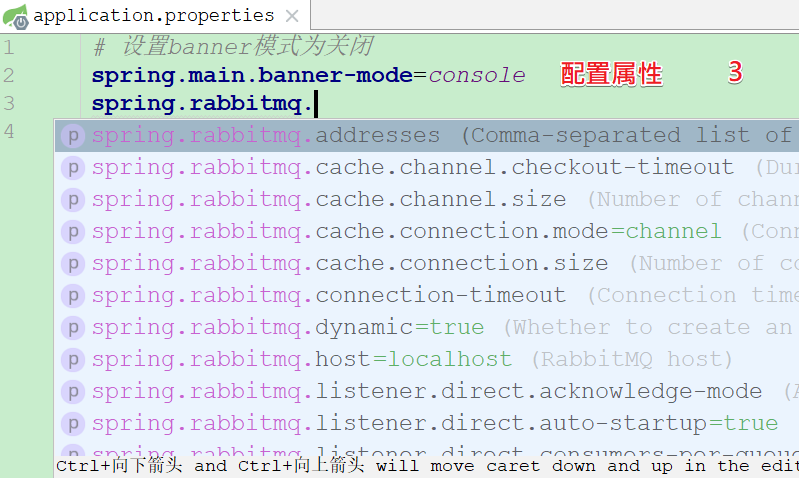

课程目标
目标1: 了解 Spring Boot 的作用
目标2: 熟悉 yaml 配置文件的配置
目标3: 能够说出 Spring Boot 自动配置原理
目标4: 掌握 SpringBoot 整合 SpringMVC
目标5: 掌握 SpringBoot 整合 连接池
目标6: 掌握 SpringBoot 整合 Mybatis
目标7: 掌握 SpringBoot 整合 Redis
01、Spring应用：优缺点分析
目标: 了解 Spring 应用的优缺点
1.1 优点分析
- Spring是Java企业版（Java Enterprise Edition，JEE，也称J2EE）的轻量级代替品。无需开发重量级的Enterprise JavaBean（EJB），Spring为企业级Java开发提供了一种相对简单的方法，通过依赖注入IOC和面向切面AOP编程，用简单的Java对象（Plain Old Java Object，POJO）实现了EJB的功能。
1.2 缺点分析
虽然Spring的组件代码是轻量级的，但它的配置却是重量级的。
- 最开始，Spring用XML配置，而且是很多XML配置
。 - Spring 2.5 引入了基于注解的组件扫描，这消除了大量针对应用程序自身组件的显式XML配置。
- Spring 3.0 引入了基于Java的配置，这是一种类型安全的可重构配置方式，可以代替XML。@Bean
但是无论如何，配置始终都要写，只是更方便了些罢了。编写配置挤占了大量编写应用程序逻辑的时间。
- 最开始，Spring用XML配置，而且是很多XML配置
除此之外，项目的依赖管理也是一件耗时耗力的事情。在环境搭建时，需要分析要导入哪些库的坐标，而且还需要分析导入与之有依赖关系的其他库的坐标，一旦选错了依赖的版本，随之而来的不兼容问题就会严重阻碍项目的开发进度。
1.3 小结
- Spring应用的优点: IOC、AOP、非侵入式、事务等
- Spring应用的缺点: 配置复杂、依赖复杂
02、SpringBoot：概述
2.1 SpringBoot是什么?
SpringBoot是搭建应用的脚手架，由Spring公司的核心团队在2013年开始研发、2014年4月发布第一个版本的全新开源的轻量级框架。它基于Spring4.0设计，不仅继承了Spring框架原有的优秀特性，而且还通过简化配置来进一步简化了Spring应用的整个搭建和开发过程。另外SpringBoot通过集成大量的框架使得依赖包的版本冲突等问题得到了很好的解决。
官方学习参考文档:
https://docs.spring.io/spring-boot/docs/2.1.6.RELEASE/reference/html/
官方对SpringBoot的介绍:
- Spring Boot使您可以轻松地创建独立的、生产级的、基于Spring的应用程序，您可以“立即运行”。
- 我们对Spring平台和第三方库有一个独到的见解，这样您就可以从最少的麻烦开始了。大多数Spring引导应用程序只需要很少的Spring配置。
SpringBoot的核心思想:【约定优于配置】
2.2 SpringBoot解决什么?
Spring应用开发时的两个痛点:
复杂的配置
项目各种配置其实是开发时的损耗， 因为在思考 Spring 特性配置和解决业务问题之间需要进行思维切换，所以写配置挤占了写应用程序逻辑的时间。
一个混乱的依赖管理
项目的依赖管理也是件吃力不讨好的事情。决定项目里要用哪些库就已经够让人头痛的了，你还要知道这些库的哪个版本和其他库不会有冲突，这难题实在太棘手。并且，依赖管理也是一种损耗，添加依赖不是写应用程序代码。一旦选错了依赖的版本，随之而来的不兼容问题毫无疑问会是生产力杀手。
而SpringBoot让这一切成为过去！Spring Boot 简化了基于Spring的应用开发，只需要“run”就能创建一个独立的、生产级别的Spring应用。Spring Boot为Spring平台及第三方库提供开箱即用的设置（提供默认设置，存放默认配置的包就是启动器starter），这样我们就可以简单的开始。多数Spring Boot应用只需要很少的Spring配置。
我们可以使用SpringBoot创建java应用，并使用java –jar 启动它，就能得到一个生产级别的web工程。
2.3 SpringBoot的特点
快速创建独立的Spring应用。
提供固定的启动器依赖（启动器即Spring Boot提供的一个jar包）去简化组件配置，通过自己设置参数（.properties或.yml的配置文件），实现开箱即用（即快速使用）的效果。
自动配置Spring和其它有需要的第三方依赖。
提供了一些大型项目中常见的非功能性特性，如内嵌服务器（如tomcat、jetty、undertow）、安全、指标，健康检测、外部化配置等。
无需 XML 配置。
03、SpringBoot：搭建测试工程
目标
掌握 SpringBoot 项目的构建特点
创建步骤
创建maven工程
配置pom.xml(重点)
<?xml version="1.0" encoding="UTF-8"?> <project xmlns="http://maven.apache.org/POM/4.0.0" xmlns:xsi="http://www.w3.org/2001/XMLSchema-instance" xsi:schemaLocation="http://maven.apache.org/POM/4.0.0 http://maven.apache.org/xsd/maven-4.0.0.xsd"> <modelVersion>4.0.0</modelVersion> <!-- 1. 配置父级(作用：依赖版本锁定) --> <parent> <groupId>org.springframework.boot</groupId> <artifactId>spring-boot-starter-parent</artifactId> <version>2.1.6.RELEASE</version> </parent> <groupId>cn.itcast</groupId> <artifactId>springboot-demo</artifactId> <version>1.0-SNAPSHOT</version> <!-- 配置全局属性 --> <properties> <!-- 2. 覆盖父级属性(jdk版本) --> <java.version>1.8</java.version> </properties> <dependencies> <!-- 3. 配置web启动器(作用：自动整合SpringMVC、jackson、内嵌tomcat) --> <dependency> <groupId>org.springframework.boot</groupId> <artifactId>spring-boot-starter-web</artifactId> </dependency> </dependencies> </project>小结
SpringBoot 的项目需要继承哪个parent? spring-boot-starter-parent
加入web启动器
SpringBoot项目的特点：必需继承SpringBoot启动器父级。
04、SpringBoot：编写启动类
目标
掌握 SpringBoot 项目启动类的编写
启动类就是带 @SpringBootApplication 注解的普通Java类【是运行SpringBoot项目的入口类】
核心代码
package cn.itcast;
import org.springframework.boot.SpringApplication;
import org.springframework.boot.autoconfigure.SpringBootApplication;
/** SpringBoot启动类 */
@SpringBootApplication
public class DemoApplication {
public static void main(String[] args){
// 运行Spring应用 (一个run方法就可以运行web项目)
SpringApplication.run(DemoApplication.class, args);
}
}运行效果:
小结
- SpringBoot应用启动类上必须添加@SpringBootApplication注解
- main方法中调用SpringApplication.run(DemoApplication.class, args);
- SpringBoot应用启动后，内嵌tomcat的端口号默认是8080
05、SpringBoot：编写Controller
目标
掌握 SpringBoot 中 Controller 编写
核心代码
package cn.itcast.controller;
import org.springframework.web.bind.annotation.GetMapping;
import org.springframework.web.bind.annotation.RestController;
@RestController
public class QuickController {
@GetMapping("/quick")
public String quick(){
return "SpringBoot 从入门到精通！！";
}
}访问效果:
小结
为什么我们的 Controller 不需要配置包扫描?
@SpringBootApplication已经有默认的包扫描【默认为启动类的包名】,这样同级或下级都可扫描。
06、SpringBoot：入门总结
目标
掌握 SpringBoot 项目的入门步骤
步骤图
07、SpringBoot：自定义Banner
7.1 关闭banner横幅
方式一：
/** SpringBoot启动类 */
@SpringBootApplication
public class DemoApplication {
public static void main(String[] args){
// 运行Spring应用 (一个run方法就可以运行web项目)
//SpringApplication.run(DemoApplication.class, args);
SpringApplication springApplication = new SpringApplication(DemoApplication.class);
// 设置banner为关闭模式
springApplication.setBannerMode(Banner.Mode.OFF);
springApplication.run(args);
}
}方式二：
需要在resource目录下，提供application.properties属性文件，spring boot默认加载
# 设置banner模式为关闭
spring.main.banner-mode=off7.2 自定义banner横幅
可在resource目录下，创建banner.txt (默认加载)
${AnsiColor.BRIGHT_YELLOW}
/////////////////////////////////////////////////////////////////
// _ooOoo_ //
// o8888888o //
// 88" . "88 //
// (| ^_^ |) //
// O\ = /O //
// ____/`---'\____ //
// .' \\| |// `. //
// / \\||| : |||// \ //
// / _||||| -:- |||||- \ //
// | | \\\ - /// | | //
// | \_| ''\---/'' | | //
// \ .-\__ `-` ___/-. / //
// ___`. .' /--.--\ `. . ___ //
// ."" '< `.___\_<|>_/___.' >'"". //
// | | : `- \`.;`\ _ /`;.`/ - ` : | | //
// \ \ `-. \_ __\ /__ _/ .-` / / //
// ========`-.____`-.___\_____/___.-`____.-'======== //
// `=---=' //
// ^^^^^^^^^^^^^^^^^^^^^^^^^^^^^^^^^^^^^^^^^^^^^^^^^^ //
// 佛祖保佑 永不宕机 永无BUG //
/////////////////////////////////////////////////////////////////
${AnsiColor.BRIGHT_GREEN}
Spring Boot Version: ${spring-boot.version}${spring-boot.formatted-version}也在resource目录下，创建banner.jpg或banner.png (默认加载)
08、SpringBoot：热部署配置
目标
了解SpringBoot热部署配置
配置步骤
引入热部署依赖
<!-- 热部署配置--> <dependency> <groupId>org.springframework.boot</groupId> <artifactId>spring-boot-devtools</artifactId> </dependency>idea的额外配置
注意: 改完这些设置信息后，idea需要重启，才有效果！
小结
- 热部署的作用？改了代码自动重启。
09、SpringBoot：起步依赖原理
目标: 了解起步依赖的原理
依赖过程:
我们的项目springboot-demo需配置起步依赖
spring-boot-starter-parent项目环境属性锁定
spring-boot-dependencies依赖版本锁定
小结
我们的项目继承spring-boot-starter-parent父级的作用
可以继承到父级的项目环境属性
可以继承到父级的全部依赖锁定
10、SpringBoot：启动器&自动配置
使用SpringBoot之后，整合SpringMVC的WEB工程开发，变的无比简单，那些繁杂的配置都消失不见了，这是如何做到的？
目标：Spring Boot的核心：启动器&自动配置原理
10.1 启动器介绍
Spring Boot提供的启动器

Spring Boot启动器的作用
- 配置一个启动器它会把整合这个框架或模块的依赖全部导入。
- 每一个启动器都有一个自动配置类，实现自动整合Spring。
- 每一个启动器都有一个配置属性类，提供了默认整合的属性配置。
10.2 自动配置原理
一切魔力的开始，来自启动类的main方法:
特别的两个地方:
- 注解: @SpringBootApplication 【重点】
- run方法: SpringApplication.run() 运行spring应用(创建spring容器)
@SpringBootApplication 相当于三个注解的组合
@SpringBootConfiguration 【作用: 定义配置类】
@EnableAutoConfiguration 【作用: 启用自动配置】
注解
@EnableAutoConfiguration，告诉SpringBoot基于你所添加的依赖，去“猜测”你想要如何配置Spring。比如我们引入了spring-boot-starter-web，而这个启动器中帮我们添加了tomcat、SpringMVC的依赖。此时自动配置就知道你是要开发一个web应用，所以就帮你完成了web及SpringMVC的默认配置了！@ComponentScan 【作用: 组件扫描】
配置组件扫描的指令。提供了类似与
<context:component-scan>标签的作用通过basePackageClasses或者basePackages属性来指定要扫描的包。如果没有指定这些属性，那么将从声明这个注解的类所在的包开始，扫描包及子包
自动配置实现流程
SpringApplication在运行Spring应用时，是通过SpringFactoriesLoader的loadSpringFactories()方法,初始化Spring工厂实例。
META-INF/spring.factories工厂配置文件
加载该文件，判断对应的启动器是否导入，如果导入就创建实例，自动注入默认属性。
这个key所对应的值，就是所有的自动配置类，可以在当前的jar包中找到这些自动配置类:
每个包都有一个XxxAutoConfiguration配置类，都是一个基于纯注解的配置类，是各种框架整合的代码。
该自动配置类，如果有默认属性，在该包下就会有一个XxxProperties属性类:

10.3 配置属性介绍
Spring Boot为所有的启动器提供了默认的属性配置,如果我们需要修改就必须要知道哪些属性是属于哪些启动器的默认配置。
官方属性配置介绍: https://docs.spring.io/spring-boot/docs/2.1.6.RELEASE/reference/htmlsingle/#appendix
10.4 配置属性流程
从官方文档中找对应的属性，是件很麻烦的事情，因为属性太多，也不知道到底是哪个自动配置类的属性。
配置步骤
第一步：配置一个自动配置类的属性，先到spring-boot-autoconfigure-2.1.6.RELEASE.jar找到对应的模块。

第二步：如果该自动配置类有可以配置的属性，那么对应的整合模块中一定有一个XxxProperties属性类，在里面找可以配置的属性。
第三步：在resources目录下的application.properties或application.yml文件里面可以修改XxxProperties类中默认的属性。

10.5 总结
Spring Boot自动配置原理:
- SpringApplication会寻找 META-INF/spring.factories 文件，读取其中以EnableAutoConfiguration 为key的所有类的名称, 这些类就是提前写好的自动配置类。
- 这些类都声明了@Configuration注解，并且通过@Bean注解提前配置了我们所需要的一切实例，完成自动配置。
- 这些配置类不一定全部生效，因为有@ConditionalOn注解，满足一定条件才会生效。
- 我们可以通过配置application.yml或application.properties文件，来覆盖自动配置中的默认属性。
springboot在启动过程当中，会加载项目中所有的META-INF/Spring.factories文件，文件中包含了很多自动配置类，类上面都有一个@Configuration注解，标识它是一个配置类，还有一个条件注解@ConditionalOnClass，必须满足条件注解，配置类才会生效，加入一个相关的启动器依赖，能够使得条件注解生效，配置类也就生效了。

Spring Boot开发两个重点:
- 找Spring Boot提供的starter启动器。
- 配置属性覆盖starter启动器中自动配置类的默认属性。
11、SpringBoot：properties配置
目标：掌握在application.properties文件中配置tomcat端口号与访问路径
作用
- 能够覆盖自动配置中指定的默认属性
- 自定义属性
核心配置
修改resources目录下的application.properties属性文件:
# 设置tomcat端口号
server.port=9001
# 设置项目的访问路径
server.servlet.context-path=/test12、SpringBoot：yml配置【推荐】
目标：掌握yml文件的语法，配置标量类型、对象类型、数组类型、对象数组类型
yaml文件介绍
- YML文件格式是YAML(YAML Aint Markup Language)编写的文件格式，YAML是一种层级树键值对格式文件，并且容易被人类阅读，容易和脚本语言交互的，可以被支持YAML库的不同的编程语言程序导入，比如： C/C++, Ruby, Python, Java, Perl, C#, PHP等。YML文件是以数据为核心的，比传统的xml方式更加简洁。
- YML文件的扩展名可以使用.yml或者.yaml。
核心配置
在resources目录下,新建application.yml:
# 注意: 冒号后面必须有空格
# 覆盖自动配置类的默认属性
server:
port: 9002
servlet:
contextPath: /
# 定义自已项目中需要的属性
# 标量类型
my:
host: 127.0.0.1
port: 3306
# 对象类型
user:
name: 小华华
age: 18
sex: 男
# 数组类型
address:
- 天河九巷
- 天河八巷
- 天河十巷
# 对象数组类型
users:
- name: 李小三
age: 18
sex: 女
- name: 李小一
age: 20
sex: 男 注意
当application.properties与application.yml两个文件同时存在时，当属性名相同时application.properties中的属性会 覆盖 application.yml中的属性，不同的属性就取并集。
13、SpringBoot：访问配置文件
目标：掌握读取配置文件的三种方式
13.1 方式一
@ConfigurationProperties: java语言中的全部数据类型(PropController1.java)
package cn.itcast.controller;
import cn.itcast.pojo.User;
import org.springframework.boot.context.properties.ConfigurationProperties;
import org.springframework.web.bind.annotation.GetMapping;
import org.springframework.web.bind.annotation.RestController;
import java.util.Arrays;
import java.util.List;
/**
* 方式一：@ConfigurationProperties
* 条件：1、必须在Bean当中使用；2、必须提供set方法
*
* @author LK
* @date 2020/9/12
*/
@RestController
@ConfigurationProperties(prefix = "my")
public class PropController1 {
private String host;
private int port;
private User user;
private String[] address;
private List<User> users;
@GetMapping("/test1")
public String test1(){
System.out.println("======test1=======");
System.out.println("host = " + host);
System.out.println("port = " + port);
System.out.println("user = " + user);
System.out.println("address = " + Arrays.toString(address));
System.out.println("users = " + users);
return "test1方法，访问成功！";
}
/** 注入的属性必须提供setter方法 */
public void setHost(String host) {
this.host = host;
}
public void setPort(int port) {
this.port = port;
}
public void setUser(User user) {
this.user = user;
}
public void setAddress(String[] address) {
this.address = address;
}
public void setUsers(List<User> users) {
this.users = users;
}
}定义User.java实体类:
package cn.itcast.pojo;
public class User {
private String name;
private int age;
private String sex;
public String getName() {
return name;
}
public void setName(String name) {
this.name = name;
}
public int getAge() {
return age;
}
public void setAge(int age) {
this.age = age;
}
public String getSex() {
return sex;
}
public void setSex(String sex) {
this.sex = sex;
}
@Override
public String toString() {
return "User{" +
"name='" + name + '\'' +
", age=" + age +
", sex='" + sex + '\'' +
'}';
}
}注意
- @ConfigurationProperties(prefix = “my”) 尽量指定前缀，避免冲突。
- 所有需要注入的属性，都必须提供setter方法
- 必须在Bean中使用
13.2 方式二
@Value: 基本数据类型和String (PropController2.java)
package cn.itcast.controller;
import cn.itcast.pojo.User;
import org.springframework.beans.factory.annotation.Value;
import org.springframework.boot.context.properties.ConfigurationProperties;
import org.springframework.web.bind.annotation.GetMapping;
import org.springframework.web.bind.annotation.RestController;
import java.util.Arrays;
import java.util.List;
/**
* 方式二：@Value
* 条件：1、必须在Bean当中使用；2、只能读取普通类型的属性（String,Int)
*
* @author LK
* @date 2020/9/12
*/
@RestController
public class PropController2 {
@Value("${my.host}")
private String host;
@Value("${my.port}")
private int port;
private User user;
private String[] address;
private List<User> users;
@GetMapping("/test2")
public String test2(){
System.out.println("======test2=======");
System.out.println("host = " + host);
System.out.println("port = " + port);
System.out.println("user = " + user);
System.out.println("address = " + Arrays.toString(address));
System.out.println("users = " + users);
return "test2方法，访问成功！";
}
public void setUser(User user) {
this.user = user;
}
public void setAddress(String[] address) {
this.address = address;
}
public void setUsers(List<User> users) {
this.users = users;
}
}注意
- @Value只能注入：基本数据类型与String
- 必须在Bean中使用
13.3 方式三
将需要注入的属性定义成一个属性类，当用到的时候 需要 启用配置属性。这样做属性类就可以重复使用。
- @ConfigurationProperties: 配置属性
- @EnableConfigurationProperties(UserProperties.class): 启用配置属性(创建Bean)
定义属性类:
package cn.itcast.configuration;
import cn.itcast.pojo.User;
import org.springframework.boot.context.properties.ConfigurationProperties;
import java.util.List;
@ConfigurationProperties(prefix = "my")
public class UserProperties {
private String host;
private int port;
private User user;
private String[] address;
private List<User> users;
public String getHost() {
return host;
}
public void setHost(String host) {
this.host = host;
}
public int getPort() {
return port;
}
public void setPort(int port) {
this.port = port;
}
public User getUser() {
return user;
}
public void setUser(User user) {
this.user = user;
}
public String[] getAddress() {
return address;
}
public void setAddress(String[] address) {
this.address = address;
}
public List<User> getUsers() {
return users;
}
public void setUsers(List<User> users) {
this.users = users;
}
}启用配置属性:
package cn.itcast.controller;
import cn.itcast.configuration.UserProperties;
import org.springframework.beans.factory.annotation.Autowired;
import org.springframework.boot.context.properties.EnableConfigurationProperties;
import org.springframework.web.bind.annotation.GetMapping;
import org.springframework.web.bind.annotation.RestController;
/**
* 方式三：@EnableConfigurationProperties
* 条件：1、必须在Bean当中使用；
*
* @author LK
* @date 2020/9/12
*/
@RestController
@EnableConfigurationProperties(UserProperties.class)
public class PropController3 {
@Autowired(required = false)
private UserProperties userProperties;
@GetMapping("/test3")
public String test3(){
System.out.println("======test3======");
System.out.println(userProperties.getHost());
System.out.println(userProperties.getPort());
System.out.println(userProperties.getUser());
System.out.println(userProperties.getAddress());
System.out.println(userProperties.getUsers());
return "test3方法，访问成功！";
}
}注意
- 将需要注入的属性定义成一个属性类，可以重复使用。(@ConfigurationProperties实现注入属性)
- 当需要用的时候，需要指定属性类为Bean。(@EnableConfigurationProperties指定某个类为Bean)
- 必须在Bean中使用@EnableConfigurationProperties
14、SpringBoot：整合lombok
整合步骤
第一步: 在idea中安装lombok插件(已安装跳过此步)
第二步: 引入lombok依赖
<!-- 引入lombok --> <dependency> <groupId>org.projectlombok</groupId> <artifactId>lombok</artifactId> <scope>provided</scope> </dependency>第三步: lombok注解介绍
- @Data: 自动生成getter、setter、hashCode、equals、toString方法
- @AllArgsConstructor: 自动生成全参构建器
- @NoArgsConstructor: 自动生成无参构建器
- @Setter: 自动生成setter方法
- @Getter: 自动生成getter方法
- @EqualsAndHashCode: 自动生成equals、hashCode方法
- @ToString: 自动生成toString方法
- @Slf4j: 自动在bean中提供log变量，其实用的是slf4j的日志功能。
- @NonNull: 这个注解可以用在成员方法或者构造方法的参数前面，会自动产生一个关于此参数的非空检查，如果参数为空，则抛出一个空指针异常。
第四步: 在实体类上加注解
package cn.itcast.pojo; import lombok.*; @ToString // toString @Data // getter、setter、toString、equals、hashCode @AllArgsConstructor // 全参构造器 @NoArgsConstructor // 无参构造器 public class User { private String name; private int age; private String sex; }
15、SpringBoot：整合SpringMVC
整合SpringMVC只需要引入: spring-boot-starter-web启动器依赖。
说明: 虽然默认配置已经可以使用SpringMVC，不过我们有时候需要进行自定义配置。
15.1 日志控制
# 配置日志
logging:
level:
cn.itcast: debug说明:
- logging.level: 是固定写法，说明下面是日志级别配置，日志相关其它配置也可以使用。
- cn.itcast: 是指定包名，后面的配置仅对这个包有效。
- debug: 日志的级别
控制器中加入日志:
package cn.itcast.controller;
import lombok.extern.slf4j.Slf4j;
import org.springframework.web.bind.annotation.GetMapping;
import org.springframework.web.bind.annotation.RestController;
@RestController
@Slf4j // 日志注解
public class LogController {
@GetMapping("/log")
public String log(){
log.debug("====debug====");
log.info("====info====");
log.warn("====warn====");
log.error("====error====");
return "log....";
}
}15.2 访问静态资源
思考: 现在，我们的工程是一个jar工程，没有webapp目录，我们的静态资源该放哪里呢?
操作步骤
第一步: 先找到资源属性类(ResourceProperties.java)，它有默认的静态资源存储路径。
默认的静态资源访问路径有四个:
- classpath:/META-INF/resources/
- classpath:/resources/
- classpath:/static/
- classpath:/public
说明: 只要静态资源放在这些目录中任何一个，SpringMVC都会帮我们处理。
第二步: 创建静态资源存储目录
我们习惯会把静态资源放在
classpath:/static/目录下。拷贝”资料”文件夹目录下的test.jpg与test.js重启项目后访问
15.3 添加拦截器
思考: 拦截器也是我们经常需要使用的，在SpringBoot中该如何添加呢？
参考官方文档:
if you want to keep Spring Boot MVC features and you want to add additional MVC configuration (interceptors, formatters, view controllers, and other features), you can add your own
@Configurationclass of typeWebMvcConfigurerbut without@EnableWebMvc. If you wish to provide custom instances ofRequestMappingHandlerMapping,RequestMappingHandlerAdapter, orExceptionHandlerExceptionResolver, you can declare aWebMvcRegistrationsAdapterinstance to provide such components.If you want to take complete control of Spring MVC, you can add your own
@Configurationannotated with@EnableWebMvc.
翻译如下：
如果你想要保持Spring Boot 的一些默认MVC特征，同时又想自定义一些MVC配置（包括：拦截器、格式化器、视图控制器、消息转换器 等等），你应该让一个类实现
WebMvcConfigurer，并且添加@Configuration注解，但是千万不要加@EnableWebMvc注解。如果你想要自定义HandlerMapping、HandlerAdapter、ExceptionResolver等组件，你可以创建一个WebMvcRegistrationsAdapter实例 来提供以上组件。如果你想要完全自定义SpringMVC，不保留SpringBoot提供的一切特征，你可以自己定义类并且添加
@Configuration注解和@EnableWebMvc注解
小结: 通过实现WebMvcConfigurer接口，添加@Configuration注解来实现自定义SpringMvc相关配置。
实现步骤
第一步: 自定义拦截器实现HandlerInterceptor接口
src\main\java\cn\itcast\interceptor\LoginInterceptor.java:
package cn.itcast.interceptor; import lombok.extern.slf4j.Slf4j; import org.springframework.web.servlet.HandlerInterceptor; import org.springframework.web.servlet.ModelAndView; import javax.servlet.http.HttpServletRequest; import javax.servlet.http.HttpServletResponse; /** 定义拦截器 */ @Slf4j public class LoginInterceptor implements HandlerInterceptor { /** 前置处理 */ @Override public boolean preHandle(HttpServletRequest request, HttpServletResponse response, Object handler) throws Exception { log.debug("== preHandle 方法执行! =="); return true; } /** 后置处理 */ @Override public void postHandle(HttpServletRequest request, HttpServletResponse response, Object handler, ModelAndView modelAndView) throws Exception { log.debug("== postHandle 方法执行! =="); } /** 视图渲染之后 */ @Override public void afterCompletion(HttpServletRequest request, HttpServletResponse response, Object handler, Exception ex) throws Exception { log.debug("== afterCompletion 方法执行! =="); } }第二步: 自定义配置类实现WebMvcConfigurer接口,注册拦截器
src\main\java\cn\itcast\configuration\MvcConfiguration.java
package cn.itcast.configuration; import cn.itcast.interceptor.LoginInterceptor; import org.springframework.context.annotation.Configuration; import org.springframework.web.servlet.config.annotation.InterceptorRegistry; import org.springframework.web.servlet.config.annotation.WebMvcConfigurer; @Configuration public class MvcConfiguration implements WebMvcConfigurer { /** 重写接口中的addInterceptors方法，添加自定义拦截器 */ @Override public void addInterceptors(InterceptorRegistry registry) { // 添加拦截器，通过addPathPatterns来添加拦截路径 registry.addInterceptor(new LoginInterceptor()) .addPathPatterns("/**"); } }运行结果:
16、SpringBoot：整合JDBC&事务
16.1 搭建新工程
起步依赖:
<?xml version="1.0" encoding="UTF-8"?>
<project xmlns="http://maven.apache.org/POM/4.0.0"
xmlns:xsi="http://www.w3.org/2001/XMLSchema-instance"
xsi:schemaLocation="http://maven.apache.org/POM/4.0.0
http://maven.apache.org/xsd/maven-4.0.0.xsd">
<modelVersion>4.0.0</modelVersion>
<!-- 指定继承父级 -->
<parent>
<groupId>org.springframework.boot</groupId>
<artifactId>spring-boot-starter-parent</artifactId>
<version>2.1.6.RELEASE</version>
</parent>
<groupId>cn.itcast</groupId>
<artifactId>springboot-high</artifactId>
<version>1.0-SNAPSHOT</version>
<dependencies>
<!-- 配置Web启动器(集成SpringMVC、内嵌tomcat、Jackson) -->
<dependency>
<groupId>org.springframework.boot</groupId>
<artifactId>spring-boot-starter-web</artifactId>
</dependency>
<!-- 配置lombok插件 -->
<dependency>
<groupId>org.projectlombok</groupId>
<artifactId>lombok</artifactId>
<scope>provided</scope>
</dependency>
</dependencies>
</project>创建启动类:
package cn.itcast.springboot;
import org.springframework.boot.SpringApplication;
import org.springframework.boot.autoconfigure.SpringBootApplication;
/** 启动类 */
@SpringBootApplication
public class HighApplication {
public static void main(String[] args){
// 运行spring应用
SpringApplication.run(HighApplication.class, args);
}
}16.2 整合jdbc&事务
思考: Spring的jdbc操作是项目中最重要一环，在SpringBoot项目中该如何集成呢？
整合步骤
引入依赖【jdbc启动器 与 数据库驱动】
<!-- 配置jdbc启动器 --> <dependency> <groupId>org.springframework.boot</groupId> <artifactId>spring-boot-starter-jdbc</artifactId> </dependency> <!-- 配置mysql驱动 --> <dependency> <groupId>mysql</groupId> <artifactId>mysql-connector-java</artifactId> <version>5.1.47</version> </dependency>SpringBoot项目是通过注解来控制事务，是我们熟知的
@Transactional【后面演示】
16.3 配置连接池
在刚才引入jdbc启动器的时候，SpringBoot已经自动帮我们引入了一个连接池
HikariCP应该是目前速度最快的连接池了，我们看看它与c3p0的对比:
application.yml文件中配置连接池
spring-boot-autoconfigure-2.1.6.RELEASE.jar包中找到DataSourceProperties.java
spring: datasource: driver-class-name: com.mysql.jdbc.Driver url: jdbc:mysql://localhost:3306/springboot_db username: root password: root说明: 用”资料”中的 tb_user.sql 创建数据库表。
17、SpringBoot：整合Mybatis
SpringBoot官方并没有提供Mybatis的启动器，不过Mybatis官网自己实现了。
整合步骤
引入mybatis启动器依赖(它依赖了jdbc启动器，jdbc启动器可以删除)
<!-- 配置mybatis启动器 --> <dependency> <groupId>org.mybatis.spring.boot</groupId> <artifactId>mybatis-spring-boot-starter</artifactId> <version>2.1.0</version> </dependency>配置mybatis相关属性
mybatis: # 配置类型别名包扫描 type-aliases-package: cn.itcast.springboot.pojo # sql语句映射文件路径 mapper-locations: - classpath:mappers/*.xml # 驼峰映射 configuration: map-underscore-to-camel-case: true # 配置日志 logging: level: cn.itcast: debug用户实体(User)
package cn.itcast.springboot.pojo; import lombok.Data; import java.util.Date; @Data public class User{ // 用户id private Long id; // 用户名 private String userName; // 密码 private String password; // 姓名 private String name; // 年龄 private Integer age; // 性别 1: 男 2: 女 private Short sex; // 出生日期 private Date birthday; // 备注 private String note; // 创建时间 private Date created; // 修改时间 private Date updated; }数据访问接口(UserMapper)
方式一 (@Mapper注解)
package cn.itcast.springboot.mapper; import cn.itcast.springboot.pojo.User; import org.apache.ibatis.annotations.Mapper; import java.util.List; @Mapper // 声明数据访问接口，产生代理对象，生成Bean public interface UserMapper { // 查询全部用户 List<User> findAll(); }方式二 (@MapperScan注解)【推荐】
package cn.itcast.springboot.mapper; import cn.itcast.springboot.pojo.User; import java.util.List; public interface UserMapper { // 查询全部用户 List<User> findAll(); }在启动类上添加数据访问接口包扫描:
package cn.itcast.springboot; import org.mybatis.spring.annotation.MapperScan; import org.springframework.boot.SpringApplication; import org.springframework.boot.autoconfigure.SpringBootApplication; /** 启动类 */ @SpringBootApplication // 数据访问接口包扫描 @MapperScan(basePackages = {"cn.itcast.springboot.mapper"}) public class HighApplication { public static void main(String[] args){ // 运行spring应用 SpringApplication.run(HighApplication.class, args); } }说明: 这种方式的好处是，不用给每一个Mapper都添加注解。采用@MapperScan包扫描方式只需要添加一次注解。
定义SQL语句(UserMapper.xml)
<?xml version="1.0" encoding="UTF-8" ?> <!DOCTYPE mapper PUBLIC "-//mybatis.org//DTD Mapper 3.0//EN" "http://mybatis.org/dtd/mybatis-3-mapper.dtd"> <mapper namespace="cn.itcast.springboot.mapper.UserMapper"> <select id="findAll" resultType="User"> SELECT * FROM tb_user </select> </mapper>业务层 (UserService)
package cn.itcast.springboot.service; import cn.itcast.springboot.mapper.UserMapper; import cn.itcast.springboot.pojo.User; import org.springframework.beans.factory.annotation.Autowired; import org.springframework.stereotype.Service; import org.springframework.transaction.annotation.Transactional; import java.util.List; @Service @Transactional public class UserService { @Autowired(required = false) private UserMapper userMapper; // 查询全部用户 public List<User> findAll(){ return userMapper.findAll(); } }控制器 (UserController)
package cn.itcast.springboot.controller; import cn.itcast.springboot.pojo.User; import cn.itcast.springboot.service.UserService; import org.springframework.beans.factory.annotation.Autowired; import org.springframework.web.bind.annotation.GetMapping; import org.springframework.web.bind.annotation.RestController; import java.util.List; @RestController public class UserController { @Autowired private UserService userService; // 查询全部用户 @GetMapping("/findAll") public List<User> findAll(){ return userService.findAll(); } }运行测试
18、SpringBoot：整合通用mapper
通用Mapper简化了单表的CRUD，对于单表CRUD，不用写SQL语句，完全面向对象方式操作数据库，通用Mapper的作者也为自己的插件编写了Spring Boot启动器。
通用mapper官网: https://github.com/abel533/Mapper/wiki/3.config
整合步骤
引入通用Mapper启动器依赖(它依集成了mybatis,mybatis启动器可以删除)
<!-- 配置通用Mapper启动器 --> <dependency> <groupId>tk.mybatis</groupId> <artifactId>mapper-spring-boot-starter</artifactId> <version>2.1.5</version> </dependency>注意: 引入了通用Mapper的启动器，它已包含了Mybatis官方启动器的功能，因此需要删除对官方Mybatis启动器的依赖。
在实体类上加JPA注解 (User)
package cn.itcast.springboot.pojo; import lombok.Data; import tk.mybatis.mapper.annotation.KeySql; import javax.persistence.Id; import javax.persistence.Table; import java.util.Date; @Data @Table(name = "tb_user") // 表名 public class User{ // 用户id @Id // 主键 @KeySql(useGeneratedKeys = true) // 开启自增主键返回功能 private Long id; // 用户名, 指定数据库字段名 @Column(name = "user_name") private String userName; // 密码 private String password; // 姓名 private String name; // 年龄 private Integer age; // 性别 1: 男 2: 女 private Short sex; // 出生日期 private Date birthday; // 备注 private String note; // 创建时间 private Date created; // 修改时间 private Date updated; }数据访问接口需要继承Mapper接口 (UserMapper)
package cn.itcast.springboot.mapper; import cn.itcast.springboot.pojo.User; import tk.mybatis.mapper.common.Mapper; //@Mapper // 声明数据访问接口，产生代理对象，生成Bean public interface UserMapper extends Mapper<User> { }修改业务层 (UserService)
@Service @Transactional public class UserService { @Autowired(required = false) private UserMapper userMapper; // 查询全部用户 public List<User> findAll(){ return userMapper.selectAll(); } }修改启动类(@MapperScan注解修改为通用Mapper中的)
运行测试
19、SpringBoot：整合Junit
目标: 掌握SpringBoot整合Junit
整合步骤
引入test启动器依赖
<!-- 配置test启动器(自动整合spring-test、junit) --> <dependency> <groupId>org.springframework.boot</groupId> <artifactId>spring-boot-starter-test</artifactId> <scope>test</scope> </dependency>编写测试类 (UserServiceTest)
package cn.itcast.springboot; import cn.itcast.springboot.pojo.User; import cn.itcast.springboot.service.UserService; import org.junit.Test; import org.junit.runner.RunWith; import org.springframework.beans.factory.annotation.Autowired; import org.springframework.boot.test.context.SpringBootTest; import org.springframework.test.context.junit4.SpringRunner; import java.util.List; // 运行主类 @RunWith(SpringRunner.class) // 如果测试类在启动类的同级目录或者子目录下可以省略指定启动类 //@SpringBootTest(classes = {HighApplication.class}) @SpringBootTest public class UserServiceTest { @Autowired private UserService userService; @Test public void findAll(){ List<User> users = userService.findAll(); System.out.println(users); } }
小结
引入spring-boot-starter-test启动器
测试类需要到的两个注解:
@RunWith(SpringRunner.class) // 运行主类
@SpringBootTest // 指定启动类
20、SpringBoot：整合Redis
目标: 掌握SpringBoot整合Redis
整合步骤
引入Redis启动器依赖
<!-- 配置redis启动器 --> <dependency> <groupId>org.springframework.boot</groupId> <artifactId>spring-boot-starter-data-redis</artifactId> </dependency>配置Redis连接属性
# 配置Redis spring: redis: host: localhost # 主机 port: 6379 # 端口注入RedisTemplate操作Redis
package cn.itcast.springboot; import org.junit.Test; import org.junit.runner.RunWith; import org.springframework.beans.factory.annotation.Autowired; import org.springframework.boot.test.context.SpringBootTest; import org.springframework.data.redis.core.RedisTemplate; import org.springframework.test.context.junit4.SpringRunner; @RunWith(SpringRunner.class) @SpringBootTest public class RedisTemplateTest { @Autowired private RedisTemplate redisTemplate; @Test public void redisTest(){ // 设置值 redisTemplate.opsForValue().set("name", "admin"); // 获取值 Object name = redisTemplate.opsForValue().get("name"); System.out.println("name = " + name); // 删除值 redisTemplate.delete("name"); } }
小结
引入spring-boot-starter-data-redis启动器
配置属性: spring.redis.host 与 spring.redis.port
注入RedisTemplate操作Redis数据库
21、SpringBoot：项目打包部署
目标: 将Spring Boot项目使用maven命令打包运行测试
21.1 打成Jar包
- 需要添加打包组件将项目中的资源、配置、依赖包打到一个jar包中，可以使用maven的
package； - 运行: java -jar xxx(jar包名)
操作步骤
第一步: 引入Spring Boot打包插件
<build> <plugins> <!-- 配置spring-boot的maven插件 1. 用它可以运行spring-boot项目 2. 需要用它构建打jar、war资料 --> <plugin> <groupId>org.springframework.boot</groupId> <artifactId>spring-boot-maven-plugin</artifactId> </plugin> </plugins> </build>第二步: 执行命令
# 清理、打包 mvn clean package # 清理、打包 跳过测试 mvn clean package -Dmaven.test.skip=true第三步: 运行
java -jar xxx.jar第四步: 浏览器访问 http://localhost:8080/findAll
21.2 打成war包
操作步骤
第一步: 修改pom.xml
<!-- 打包方式(默认为jar) --> <packaging>war</packaging>
第二步: 排除springboot自带的tomcat
<!-- 配置tomcat启动器，就会排除spring-boot-starter-web中依赖过来的tomcat启动器 指定scope为provided: 代表打war包时，不需要它的依赖jar包(我们有自己的tomcat) --> <dependency> <groupId>org.springframework.boot</groupId> <artifactId>spring-boot-starter-tomcat</artifactId> <scope>provided</scope> </dependency>**注意: **spring-boot-starter-tomcat 是原来被传递过来的依赖，默认会打到包里，所以我们需要配置tomcat启动器，这样就会排除spring-boot-starter-web中依赖过来的tomcat启动器，并指定依赖范围为provided，这样tomcat相关的jar就不会打包到war里了。
目的: 我们用自己tomcat，不用它内嵌的tomcat，这样内嵌的tomcat相关jar包就不需要。
第三步: 自定义Web应用入口类继承SpringBootServletInitializer(相当于web.xml)
package cn.itcast.springboot; import org.springframework.boot.builder.SpringApplicationBuilder; import org.springframework.boot.web.servlet.support.SpringBootServletInitializer; /** web应用入口 */ public class WebServletInitializer extends SpringBootServletInitializer { @Override protected SpringApplicationBuilder configure(SpringApplicationBuilder builder) { // 设置启动类 builder.sources(HighApplication.class); // 返回spring应用构建对象 return builder; } }第四步: 在pom.xml修改工程的名称为
ROOT<build> <!-- 指定最终打成war的项目名称 --> <finalName>ROOT</finalName> </build>说明: ROOT是tomcat的默认工程名，也是唯一一个不需要加工程访问的目录，所以我们打包的时候用finalName指定的名字打包就直接生成的WAR包就是ROOT.war
第五步：打包
# 清理、打包 mvn clean package # 清理、打包 跳过测试 mvn clean package -Dmaven.test.skip=true第六步: 部署项目
ROOT.war安装JDK1.8环境 安装Tomcat 把 ROOT.war部署到webapps下即可 启动Tomcat，`bin/startup.bat` 即可,会自动解压ROOT.war 访问 http://localhost:8080/findAll
课程总结
- Spring Boot的优势
- 起步依赖原理
- 自动配置底层原理（重要）
- 配置文件的读写
- 整合: springmvc、mybatis、junit、redis
- 打包: jar包和war包